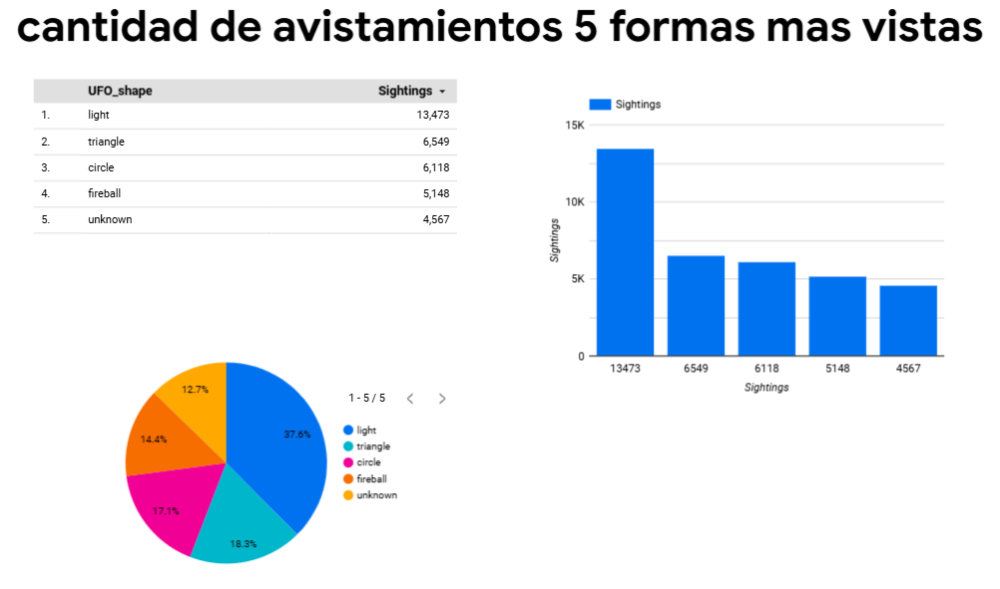

📊 Visualizaciones
- Gráfico de torta: Top 5 formas de objetos
- Gráfico de barras: Avistamientos por año
- Gráfico de mapa: Avistamientos por estado
Visualizaciones generadas con Looker Studio.
Gráficos:

Se realizó la ingesta, transformación y carga de datos en BigQuery utilizando Cloud Storage y Dataprep.
Visualizaciones generadas con Looker Studio.
Capturas de pantalla de las consultas realizadas en BigQuery.